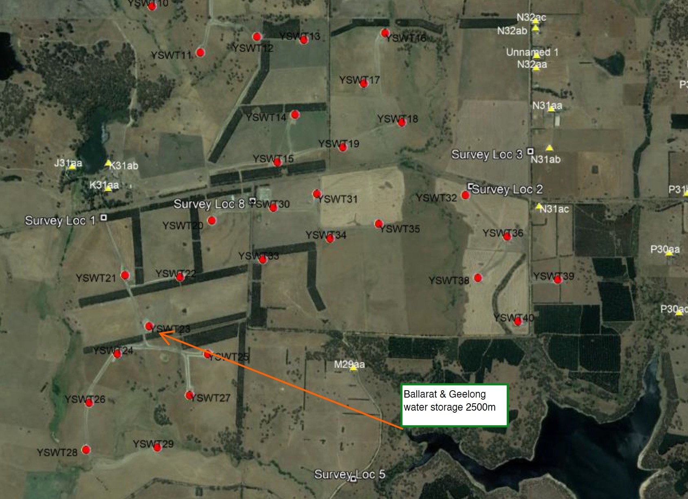
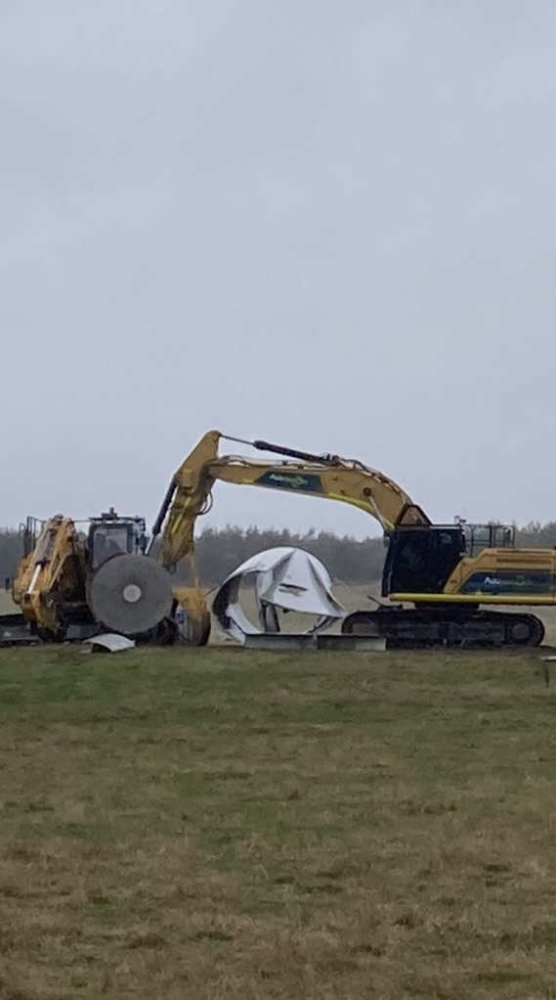
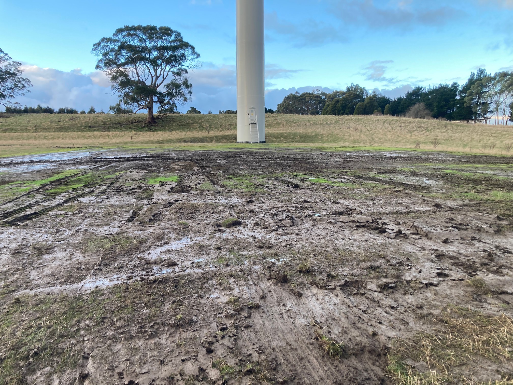
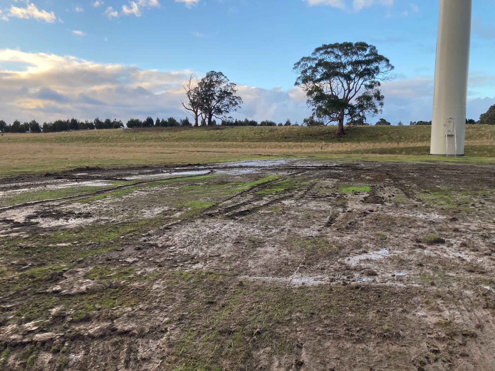
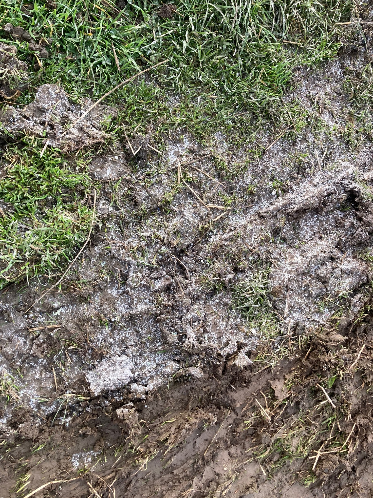

Blade Removal, Processing & Incident Record
This page preserves the available documentary record concerning 2024 turbine-blade removal and processing activity and the separate 2026 Y23 blade-failure incident, including later site footage, debris condition, rainfall context and proximity to Lal Lal Reservoir.
What this page records
The page contains two distinct documentary records: the 2024 blade-removal and processing correspondence, and the 2026 Y23 blade-failure/site-condition record. The material records what was observed, communicated and later photographed or filmed. It does not by itself establish pollution, contamination of a waterway, or a regulatory finding.
The July correspondence predates the establishment of the Owen Robert Inter Vivos Trust and is therefore identified as part of the historical Beneficiary administrative record. EPA South West Region was copied into that email chain. That fact records contemporaneous awareness of the enquiry; it is not presented as EPA endorsement of the operator’s response.
Y23 — site condition 104 days after the 15 May 2026 incident
The operator recorded a blade failure at turbine Y23 at the Yendon Wind Farm at approximately 6:45 am on 15 May 2026. New third-party footage supplied to the Beneficiary on 27 August 2026 provides a later visual record of the incident area.
104 days elapsed
From 15 May to 27 August 2026, 104 days elapsed. The 27 August footage shows substantial blade sections and numerous smaller fragments still visible across the incident area.
Visible site condition
Compared with the earlier May footage, no material general clean-up or recovery of the dispersed debris is apparent from the later visual record. This is a visual comparison only and does not establish that no material whatsoever had been removed during the intervening period.
Rainfall exposure
Available Lal Lal locality rainfall records indicate approximately 200 mm of rainfall over the intervening period, including a significant rainfall event of approximately 42 mm on 10 August 2026. The cumulative figure is presented as an approximate locality estimate, not a site-specific rainfall measurement.
Later visual record of the Y23 incident area
The footage is approximately 65 seconds long and records the turbine base, substantial blade sections and dispersed smaller fragments across the surrounding ground. The footage is preserved as received from the third party.

Reservoir proximity and rainfall
Lal Lal Reservoir is approximately 2.5 km from Y23 on the supplied straight-line map. The incident material therefore remained visible through a period of repeated winter rainfall in the Lal Lal locality.
The present record does not establish that blade material, particles or contaminants entered a drainage line, waterway or Lal Lal Reservoir. The proximity and rainfall information are published as environmental context for the duration for which substantial material remained visible at the incident site.
2024 documentary sequence
| Date | Documentary event |
|---|---|
| 14 June 2024 | The disclosed Safe Work Method Statement records its development date. |
| 24 June 2024 | The disclosed Safe Work Method Statement records its issue date for mechanical processing of turbine blades at Lal Lal. |
| 1 July 2024 | Photographs of the activity were supplied to the Beneficiary. The images are presented below as contemporaneous documentary photographs. |
| 3 July 2024 | The Beneficiary asked what environmental process was required and met when turbine blades were cut on site, and whether EPA had been notified beforehand. EPA South West Region was copied. |
| 9 July 2024 | The Beneficiary sent a follow-up in the same email chain. EPA South West Region remained copied. |
| 10 July 2024 | The operator replied that the blade-removal works were conducted to the project’s environmental management processes. The reply was within the same copied email chain. |
| 16 August 2024 | EPA advised the operator that it had received a pollution report alleging blade-cutting particles had been left on the ground with potential impact to surface waters, and requested information. |
| 26 August - 2 September 2024 | The operator provided EPA with explanations, photographs and the Safe Work Method Statement, including descriptions of wet cutting, geofabric, minimising cuts, stopping work due to wind, alternative methods and sweeping after works. |
| FY24 Annual Statement | The Annual Statement records continued planned maintenance and unplanned blade and gearbox repairs. It does not expressly identify the blade-processing activity, the SWMS or the later EPA dust enquiry. |
July 2024 enquiry and operator response
The correspondence is preserved in its original sequence and wording.
The operator’s 10 July 2024 response stated: The blade removal works was conducted to the project's environmental management processes.
Contemporaneous photographs
The captions describe only visible features. The images are not used to identify the composition of any material shown.




Pollution report, information request and operator response
EPA’s correspondence records an enquiry following a pollution report. The operator’s response records the controls and work methods it said were used.
EPA information request
EPA requested information after receiving a report concerning particles from blade cutting and potential impact to surface waters.
Operator explanation
The response described wet cutting, geofabric, minimising cuts, stopping work due to wind, an alternative method, sweeping after works and photographic records.
Safe Work Method Statement
The SWMS is contained within the EPA correspondence package and identifies dust as a hazard, with water suppression and other work-area controls described throughout the document.
The disclosed SWMS refers to measures including geofabric, bunding or encapsulation arrangements and water suppression. This page records those stated controls as documentary content; it does not independently verify their implementation at every stage of the activity.
FY24 Annual Statement
The statement records planned maintenance and unplanned blade and gearbox repairs. It is included because it forms part of the same period’s administrative record.
The statement does not expressly refer to blade processing, cutting, the Safe Work Method Statement, the environmental controls described to EPA or the later EPA dust enquiry. No conclusion is drawn on this page as to whether any further description was required.
What the available record shows
Established by the record
The Beneficiary raised the environmental-process and prior-notification questions in July 2024; EPA was copied; the operator gave a brief response; EPA later made a separate information request following a pollution report.
Recorded explanation
The operator later described the work methods and environmental controls it said had been applied and supplied supporting material to EPA.
Not established by these documents
The documents do not themselves establish pollution, EPA approval of the activity, or a regulatory finding of non-compliance.